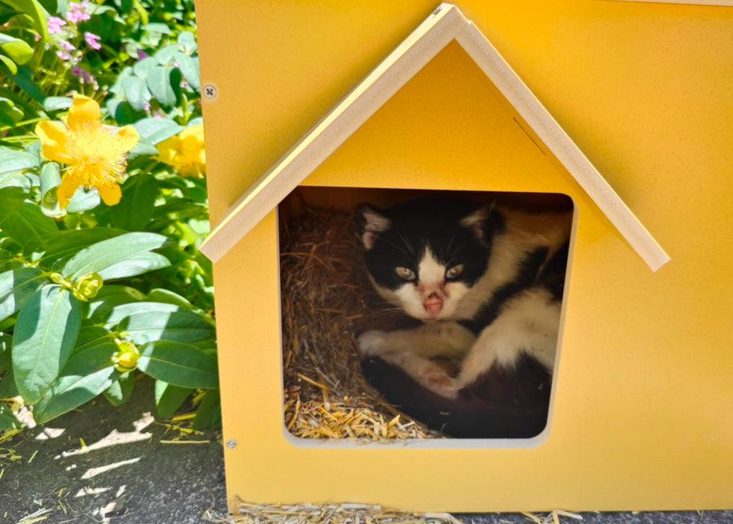
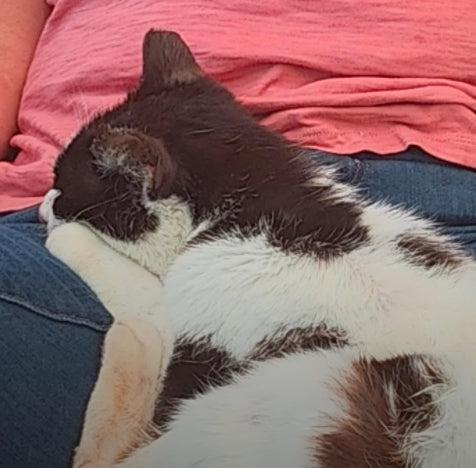
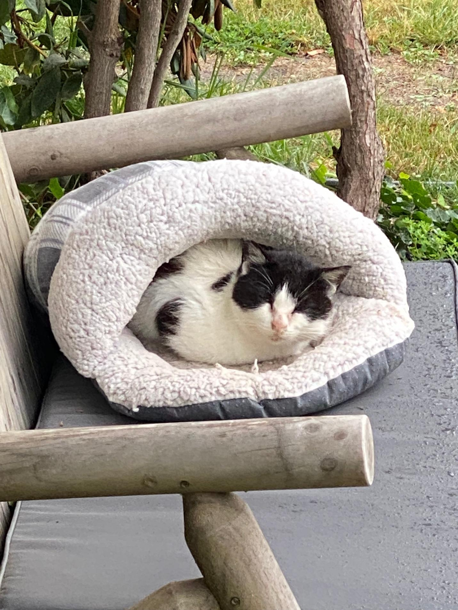
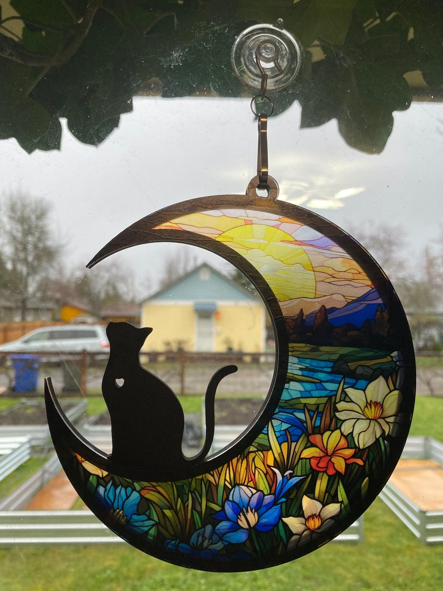

Meet Posie
The small rescue cat who inspired everything we grow.

She came from under the cottage.
In 2024, I rented the cottage across the street from our home to use as my office. One day, as I sat at my desk, I noticed a small movement outside. This petite girl came out from under the cottage.
I hurried home to gather food and water and set up a small feeding station for her. She would not let me get close to her, let alone pet her.


She endured the storm.
Days later an ice storm hit. It was freezing at night, and I worried constantly about her surviving. Every day, I brought her food, speaking softly, hoping to coax her into safety. She endured the week-long storm, a testament to her resilience.
Over the next few months, I worked to gain her trust, slowly drawing her closer to our home. Eventually, she allowed us — along with a few others — to pet her. Little by little, she found her way, not just into our home, but into our hearts.
"She seemed drawn to the flowers, curling up to nap among the zinnias and dahlias, as if the blooms were her sanctuary."

The blooms were her sanctuary.
As fall set in, she spent more and more time indoors. I noticed her energy waning; she stopped going outside altogether. A vet visited and confirmed what my heart already suspected — Posie was shutting down. We believed she had a tumor, which explained her ongoing health struggles.
When the time came, I held her close, whispering my gratitude for the beauty and inspiration she had brought into my life.

Her legacy blooms on.
Though I understand and accept the cycle of life and death, Posie's absence left an ache in my heart. Seeing my sadness, Gracen gifted me a beautiful memento to remember her by — a delicate piece that now hangs in my window. I often find myself staring at it as I plan and build the Backyard Bloomstead business.
Join the Garden List
Be the first to know about cart updates, new art releases, custom gift launches, and seasonal offerings from the garden.